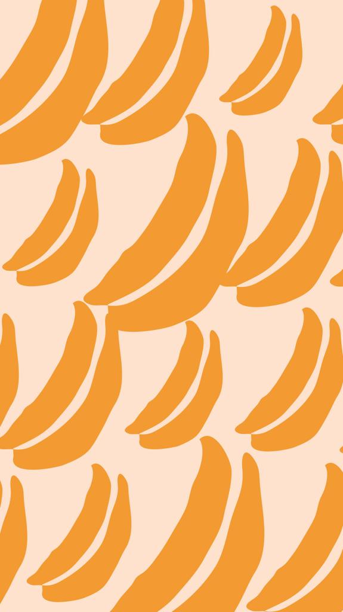
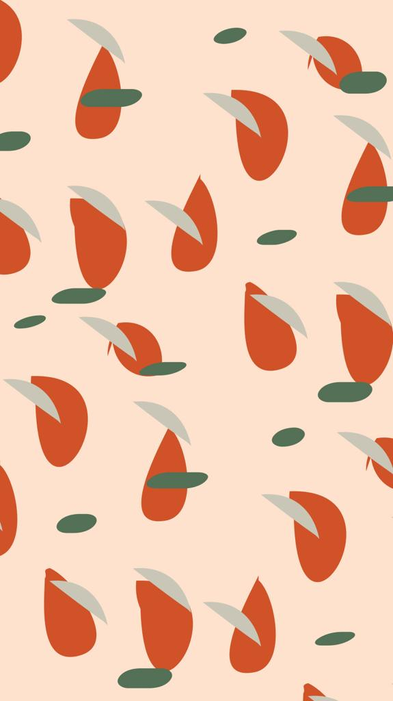

Procesos de alimentación
En los procesos de alimentación 🥑 se agenda una sesión y en base al motivo de consulta, constitución física y la historia clínica se arma un plan alimenticio desde la mirada de la Medicina Tradicional China. Además se usan, en caso de ser necesarios, suplementos dietarios y fitoterapia (terapéutica a base de las propiedades de las plantas medicinales). Tras la sesión se agenda un turno control para dentro de un mes o dos meses según la necesidad.

Sesiones de acupuntura
En las sesiones de acupuntura ✨ se pueden abordar temas digestivos, respiratorios, menstruales, tendinomusculares, psíquico emocionales, etc. Además se usan técnicas complementarias de la Medicina Tradicional China como auriculoterapia, moxibustión, ventosas, craneopuntura, dietoterapia, si fuera necesaria. En un principio se agendan 3 sesiones (1 encuentro cada 15 días, a excepción de los casos por dolor agudo o fertilidad en cuyo caso la frecuencia es semanal, durante 3 semanas seguidas). En función a la mejoría se van espaciando la frecuencia de las sesiones según la necesidad individual de cada caso a quincenal o mensual.